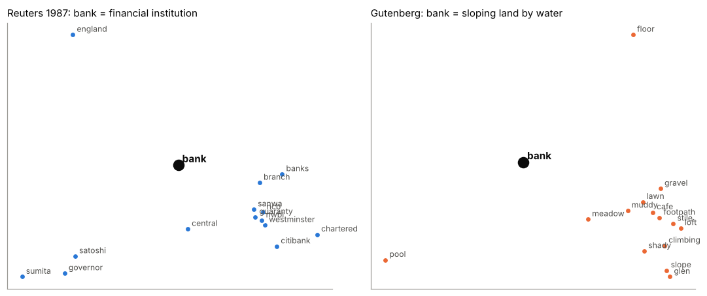
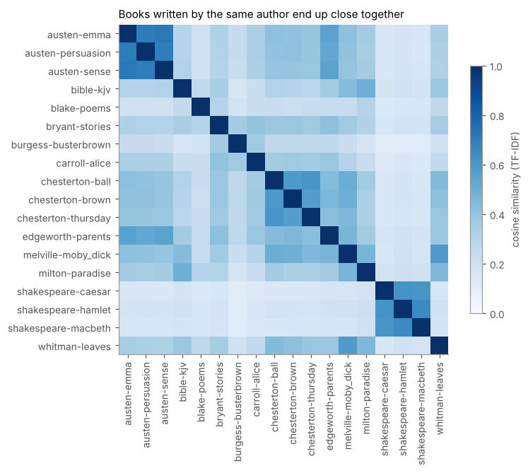
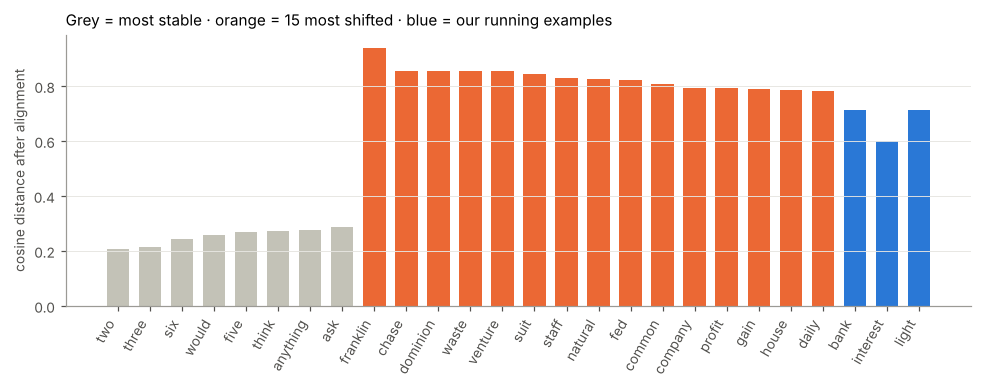
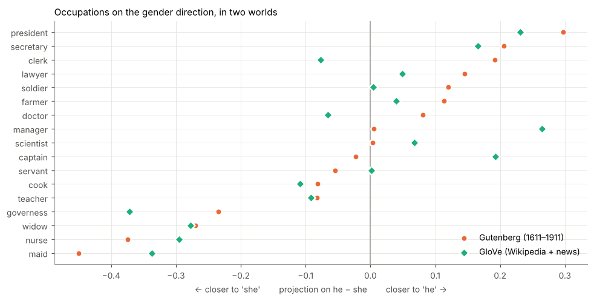

A hands-on tutorial on lexical and vector semantics. We let a computer read two very different worlds, learn word meanings from scratch, and watch bank, light, court and tender change meaning. WordNet, TF-IDF, PPMI, word2vec, GloVe, WSD, entity linking and bias, in one story that runs in under 10 minutes on Colab.
Nearest neighbours (cosine similarity) of the same word in three embedding spaces: word2vec trained on Reuters, word2vec trained on Gutenberg, and pre-trained GloVe (Wikipedia + news, 6 B tokens). Pick a word.
Every step starts with a 🔮 predict before you run question and ends with a 💬 discussion.
Ten noun senses of bank; synonyms, hypernym paths, hyponyms, meronyms, antonyms; banco in Portuguese.
LO1Keyword-in-context and context counts reveal two meanings before any maths.
LO2TF-IDF book vectors cluster by author; word–context counts vs. PPMI; cosine by hand.
LO3 · LO4Train skip-gram with negative sampling on each corpus in about a minute; compare with GloVe.
LO3 · LO6Align the two spaces (orthogonal Procrustes) and let the computer find tender, chase, fed, suit.
LO4MFS, domain MFS, Lesk and embeddings on 24 hand-labelled bank tokens.
LO5Jordan: country, river or basketball player? Priors, context, NIL and live Wikidata candidates.
LO5One vector per word, antonyms, OOV, and gender bias in 19th-century novels vs. GloVe.
LO6rede (hammock → internet), pena, real (the 1994 currency).
all


| method | Reuters | Gutenberg | why |
|---|---|---|---|
| Most frequent sense (WordNet) | 0.00 | 0.67 | WordNet's sense 1 is the river bank: frequencies from general text |
| Domain MFS (from the corpus embeddings) | 1.00 | 0.67 | the corpus tells us its dominant sense, without labels |
| NLTK Lesk | 0.17 | 0.25 | short glosses, accidental overlaps |
| Embeddings (GloVe) | 0.17 | 0.33 | always right on the coarse sense (1.00 / 1.00) |

Click Open in Colab and choose Runtime → Run all. Or locally:
git clone https://github.com/matpato/SemShift.git && cd SemShift pip install -r requirements.txt jupyter lab notebooks/SemShift_tutorial.ipynb
| Data | Size | Source |
|---|---|---|
| Reuters-21578 (ApteMod) | 10,788 docs · 1.3 M words | NLTK |
| Project Gutenberg selection | 18 books · 2.1 M words | NLTK |
| WordNet 3.0 + Open Multilingual WordNet | 117k synsets | NLTK |
GloVe glove-wiki-gigaword-100 | 400k words · 128 MB | gensim-data |
| Machado de Assis · Mac-Morpho (Folha 1994) | 2.5 M · 1.0 M words | NLTK |